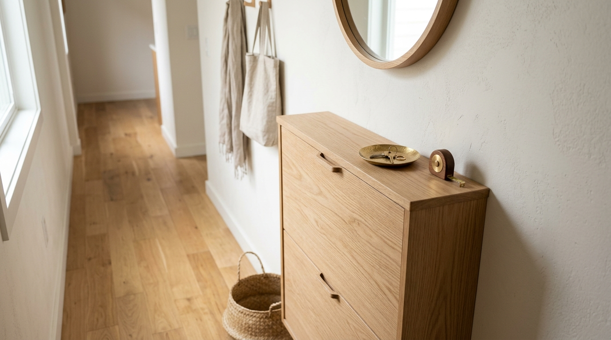

You find what looks like the perfect entryway organizer online. The wood finish matches your floor, the reviews are glowing, and the product dimensions seem reasonable. You order it, assemble it, and place it against the foyer wall.
Then the reality of daily apartment living sets in:
- The front door catches against the corner of the bench every time a guest arrives
- Carrying grocery bags through the front hall requires turning sideways
- An essential light switch or electrical outlet is permanently buried behind the back panel
- The cabinet doors cannot swing open all the way because the hallway is too narrow
- Everyday items like keys and mail end up piled on top of the unit because the shelves are awkward to reach
When small entryway storage fails, we often assume we picked the wrong aesthetic or bought cheap furniture. But in reality, the issue is almost always spatial planning.
A storage piece can fit physically against an empty wall and still be completely wrong for your entryway.
Successful entryway organization requires measuring not just the furniture, but the movement, clearances, and daily habits of the people who live there. Here are the 5 essential entryway measurements you must check before purchasing any storage piece.
Why Measuring an Entryway Is About More Than Size
In most rooms, furniture is static: a sofa sits in the corner, and a bed stays against the headboard wall. But an entryway is fundamentally a transit zone. People are constantly walking, pivoting, putting on coats, setting down bags, and opening heavy exterior doors.
There is a profound difference between two simple questions:
"Will it fit?" → Answers whether the piece fits within the raw length of an empty wall.
"Will it function?" → Answers whether people can still enter, walk, open doors, and access daily belongings without physical friction.
To avoid creating bottlenecks in compact hallways, your storage layout must align with your natural movement patterns. For deeper spatial flow principles, see our guide on the entryway traffic flow rule for a clutter-free apartment.
1. Measure the Walkway Width
The first and most critical measurement is the clear walking path remaining after your proposed storage piece is in place.
Many people measure from baseboard to baseboard and assume that 36 inches of empty floor means they can comfortably add a 14-inch deep console table. But subtracting 14 inches leaves only 22 inches of walking space—narrow enough that people will repeatedly bump their elbows, brush against walls, and catch winter coats on corners.
When measuring your walkway, account for real-life entry scenarios:
- Walking in while carrying two full grocery bags or a heavy backpack
- Two people passing each other as one arrives and one departs
- Bulky winter coats, umbrellas, and pet leashes
Quick Check:
Stand in your entryway with your arms relaxed at your sides holding a bag. Measure the width of your body with that gear. If your proposed furniture encroaches on that natural path, it will turn your front door into a daily squeeze point.
For narrow corridor layouts, review our specialized guide on how to organize a narrow entryway without making it feel smaller.
2. Check Door Clearance
A storage piece that blocks any door's movement path is not functional storage—it is an obstruction.
You must check the full 180-degree or 90-degree swing arc of every door in the immediate foyer area:
- The Exterior Front Door: Must be able to swing completely open without bumping the side, front corner, or handles of your storage furniture.
- Coat Closet & Utility Doors: If your entryway has a built-in closet, check that bifold or hinged doors can open without scraping the top of shoe racks or benches.
- The Storage Piece's Own Doors & Drawers: If you are buying a shoe cabinet with flip-down drawers or swinging cabinet doors, measure how far those doors extend when fully open.
Quick Check:
Open every door in the entryway completely flat against the wall. Place blue painter's tape on the floor along the door's full travel path. No permanent furniture should sit inside that taped arc.
3. Measure Storage Depth
In compact apartments, depth matters far more than width. A wide, ultra-shallow console table utilizes vertical wall space without stealing floor area, whereas a short, deep dresser protrudes aggressively into the walking lane.

The goal is not maximum internal volume—it is useful capacity that preserves functional movement.
- Ultra-Shallow Profiles (6–10 inches): Perfect for narrow hallways. Excellent for drop-leaf shoe cabinets, slim ledges, and wall-mounted key/mail organizers.
- Standard Consoles (12–15 inches): Suitable for wider foyers where walking paths exceed 40 inches.
- Deep Furniture (16+ inches): Generally too intrusive for apartment entryways unless placed in an architectural alcove.
To learn how to establish a dedicated drop zone without excess furniture, see the entryway landing zone system.
4. Measure Usable Wall Width
One of the most common online shopping mistakes is measuring a raw wall from corner to corner and assuming that entire span is available for furniture.
In reality, the usable wall width is almost always significantly smaller due to architectural fixtures:
| Obstacle | Why It Reduces Usable Width | Measurement Adjustment |
|---|---|---|
| Door Trim & Molding | Protrudes 1–3 inches into the wall plane | Measure between casing edges, not drywall corners |
| Light Switches & Intercoms | Must remain accessible at 48" height | Leave at least 2" clearance beside switch plate |
| Baseboards & Quarter Round | Pushes furniture away from the wall at the floor | Account for 0.75" setback when measuring depth |
| Thermostats & Electrical Outlets | Needed for vacuuming or smart hubs | Ensure furniture backs do not block plugs |
For maximizing blank vertical walls without crowding switches, check out the complete guide to entryway wall storage in a small apartment.
5. Consider Reaching Height
Storage should also be evaluated on a vertical ergonomic axis. Placing hooks or shelves at the wrong height makes returning everyday belongings annoying, leading directly to clutter accumulating on lower surfaces.
Vertical Access Zones
1. Prime Eye-to-Waist Level (34" to 54"):
Reserved exclusively for items accessed every single day: keys, daily purse/bag, active dog leash, and outgoing mail. This should be single-motion access.
2. Mid-Wall Coat Zone (54" to 66"):
Ideal for wall-mounted coat racks and daily jackets. Ensure long coats have at least 40 inches of vertical drop so they do not drag across shoe racks below.
3. High Overhead Zone (66"+):
Reserved for seasonal bins: winter beanies, gloves, extra scarves, and bicycle helmets. Never store everyday keys or dog supplies up here.
For multi-tiered vertical layouts that balance seating and storage, explore our framework for a small entryway hang, sit & store zone.
The Entryway Storage Fit Test
Before entering your credit card details on any entryway furniture or storage piece, run through the 5-step fit test:
↓
2. CHECK → Test full door swings and identify switches/outlets
↓
3. VISUALIZE → Tape the exact furniture footprint onto the floor with painter's tape
↓
4. TEST ACCESS → Walk through the taped area holding bags and opening doors
↓
5. THEN SHOP → Purchase only pieces that pass all 4 clearance checks
What to Measure Before You Shop (Checklist)
Save this quick reference checklist to your phone before shopping for entryway storage:
The Entryway Pre-Purchase Measurement Checklist:
- □ Clear Walkway Width: Walking path remaining after furniture is placed.
- □ Front Door Swing Arc: 100% unobstructed door path.
- □ Adjoining Door Clearance: Closet and room door swing paths.
- □ Maximum Usable Depth: Distance into the hallway before feeling cramped.
- □ True Usable Wall Width: Span between trim, door casings, and corners.
- □ Switch & Outlet Placement: Clear access to light switches and power plugs.
- □ Baseboard Setback: Gap created by bottom molding.
- □ Coat Drop Height: Vertical clearance for hanging coats above shoe storage.
- □ Cabinet Door / Drawer Extension: Space required to pull open storage drawers.
- □ The Core Problem Identified: Knowing the exact items that need a home.
When You May Not Need New Storage
Before purchasing new furniture, test whether your entryway bottleneck can be resolved without buying anything:
- Can you remove excess items? If four pairs of rarely worn shoes are cluttering the foyer, relocate three pairs to a bedroom closet and keep only daily pairs near the door.
- Can you elevate existing storage? Installing three simple adhesive or screw-in wall hooks often eliminates the need for a bulky floor coat rack.
- Can you repurpose an existing surface? Placing a simple ceramic dish on a nearby living room ledge can serve as your key drop without requiring a dedicated foyer table.
To audit items that needlessly crowd front doors, read our guide on 7 things wasting space in your entryway right now.
Frequently Asked Questions
While standard building codes often suggest 36 inches, many compact rental apartments operate on 30 to 32 inches. If your clear walkway drops below 28 inches after adding furniture, the space will feel uncomfortably cramped and impede natural movement.
Use blue painter's tape on your floor to outline the exact width and depth of the piece. Leave the tape in place for 48 hours as you enter and leave your home to see if your feet or bags naturally collide with the taped boundary.
Wall-mounted tilt-out shoe cabinets (such as slim vertical shoe bins) require only 7 to 9 inches of wall depth because shoes are stored vertically rather than flat. This preserves maximum walkway width in narrow foyers.
Are you 18-24 or a Student? Get 6 Months of Prime for $0!
Limited Time Offer (Ends Oct 9): Enjoy fast, free shipping, unlimited streaming, $0 food delivery (Grubhub+), fuel savings (10¢/gal), Prime Reading, unlimited Amazon Photos storage, and exclusive grocery deals. Claim your 6-month free trial of Prime for Young Adults today.
Try Prime for Free →